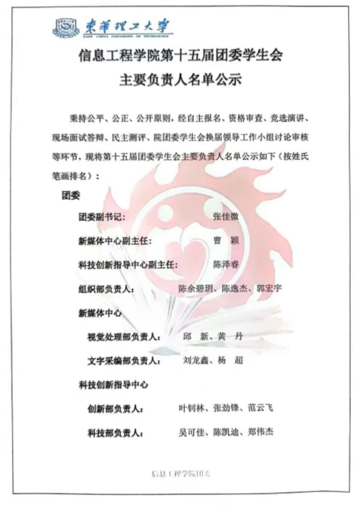
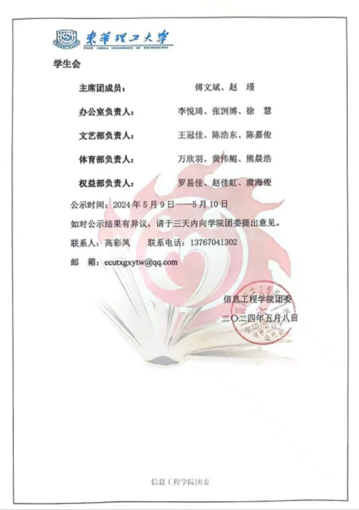
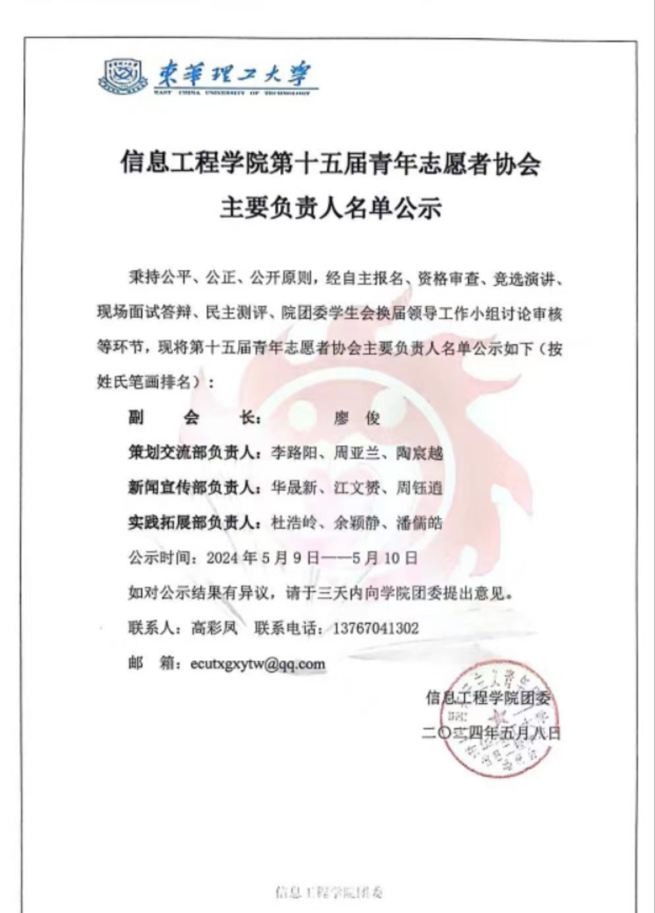

信息工程学院网络信息协会简介
信息工程学院网络信息协会由一群对网络充满热爱与激情的年轻学子创立于2012年夏。自她成立之日起，一直以坚实稳健的步伐迈向成熟，并且一直以来受到了学院各位领导与老师的关怀与指导。
我们的理念是注重培养成员的团队合作精神，致力于建设自己的社团文化。
我们面向全院师生，定位于引领时代潮流，走进网络，体验科技，致力于为全院师生服务，宣传树立正确的网络观。力求在我院学子中间扬起网络精神的时代大旗。
我们坚持发展自己的特色活动，服务大众，成功举办了大大小小各种科技文化活动。其中收到很大反响的有：“网信杯”知识竞赛，DIY电脑装机大赛，网络信息系列讲座，电子电脑知识大赛、校园PPT大赛等推广活动。
东华理工大学信息工程学院于新实验大楼报告厅召开了学院信息工程学院第十五次学生代表大会暨第十五届学生组织换届大会。学院党委书记许志文、学团办主任刘锦春、团委书记高彩凤、校学生会执行主席于佳龙、第十四届团学组织全体成员、第十五届团学组织候选人员及学生代表们参加大会，会议由高彩凤老师主持。
  学院团学组织围绕中心、服务大局，聚焦主责主业的同时兼顾学院整体工作，主动贴近青年学生实际，服务青年学生成长成才，在思想引领、校园文化、社会实践、志愿服务等方面做了大量卓有成效的工作。同时许志文书记对新一届团学组织给予深切期望，对团学工作提出要求，一是团学生会工作提几点要求：要突出价值塑造，健全思政育人体系，奏响思想引领进行曲；注重能力生成，加强第二课堂建设，奏响成长成才协奏曲；聚焦权益维护，永葆服务初心，奏响和谐校园圆舞曲。